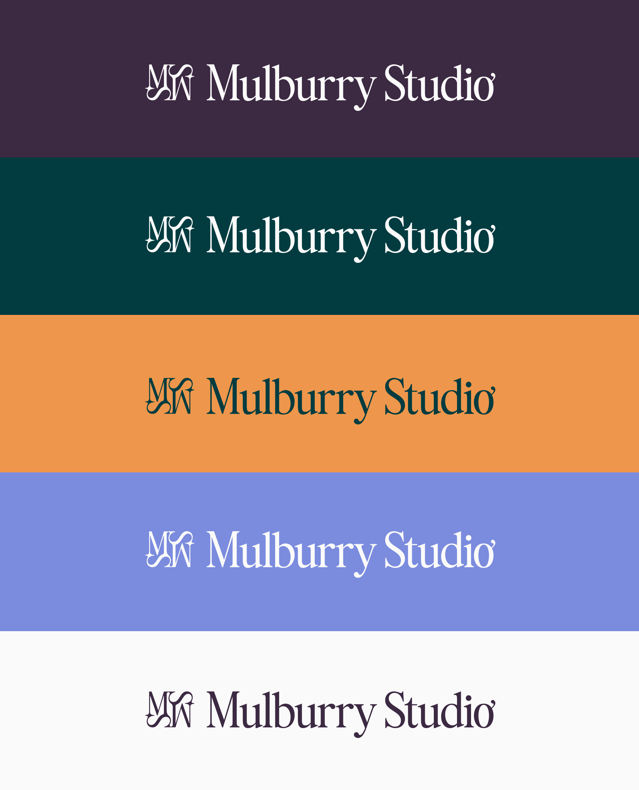
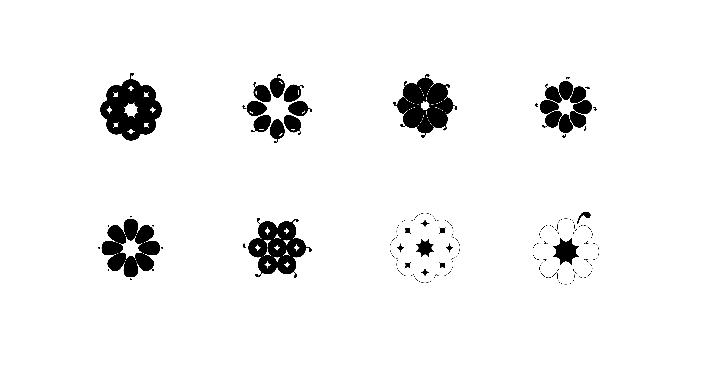
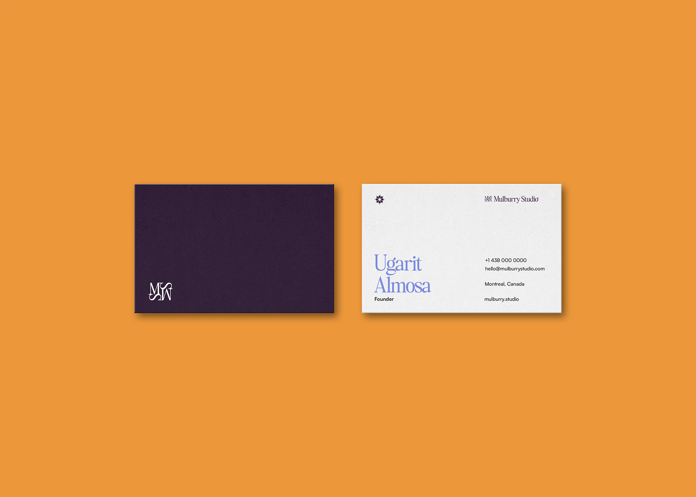

Mulburry Studio
Brand Identity & UI Kit
Introduction
Mulburry Studio is an early-stage SEO and content marketing studio ready to grow beyond its initial look. As the business began to solidify, the founder reached out for a brand revamp that could match the ambition behind the work.
Tools
Illustrator, Photoshop, Figma
Deliverables
Brand Identity System, UI Kit
Keywords
Trustworthy, Engaging, Impressive
Year
2025
The Challenge
The SEO and content marketing space is crowded, and standing out on aesthetics alone is difficult when most agencies default to the same safe, corporate look. As a one-woman studio, Mulburry Studio needed a brand that didn't just look professional, it needed to communicate the value of what she does through the identity itself. Trustworthy enough to win clients. Impressive enough to make them remember her.

The Process
Another collaboration with Wabala Studio, this project moved through weekly check-ins across stylescapes, visual identity, and a UI kit. The final direction was clean but bold. Colour was used strategically to separate content while keeping everything professional and readable for a digital-first audience.
The client had two strong requests: keep the deep purple, and find a way to incorporate the mulberry fruit. Early on, the visual complexity of the fruit raised doubt, as a monogram felt like the safer path. But the client's instinct was worth honouring, and the challenge was worth taking on.
The answer came from looking closely at the fruit itself. Each berry has a tiny style — a fine hair at its tip. That detail became the design twist: the tail of the i was quietly transferred onto the o, a subtle but clever nod to the fruit that rewards a second look.
For the monogram, the Bethany Elingston serif typeface combined the initials M and S, referencing the client's preference for a square, symmetrical mark. The S was rotated 90 degrees for visual balance before the two forms were merged into a single cohesive symbol.

Icon Iterations
The Solution
The result is a full visual identity and UI kit built to guide the studio's ongoing presence on Squarespace, a system the client could own and build on independently. The deep purple anchors the brand's authority while the fruit-forward logo gives it personality and distinctiveness in a sea of generic marketing agencies.

The Reflection
The biggest lesson from this project was learning how to make a visual identity legible, not just to me, or to a design-literate client, but to anyone who encounters the brand. Translating clever ideas into something immediately readable and understandable is its own skill, and this project sharpened it.